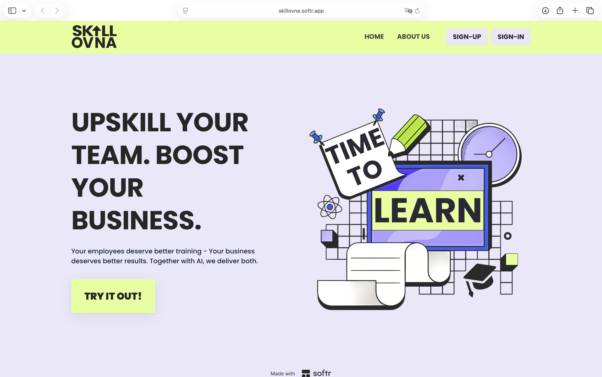
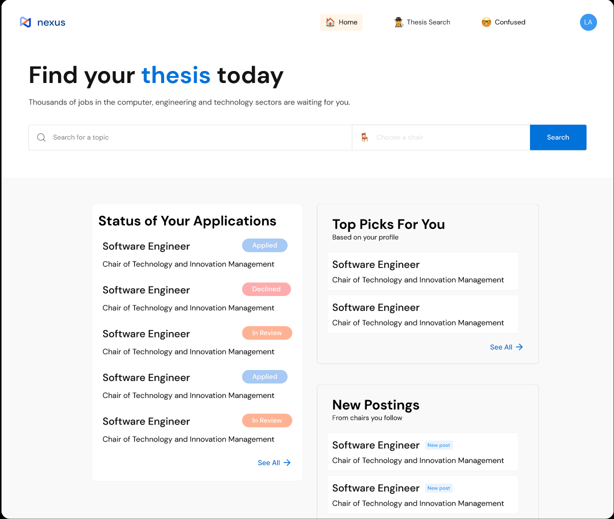
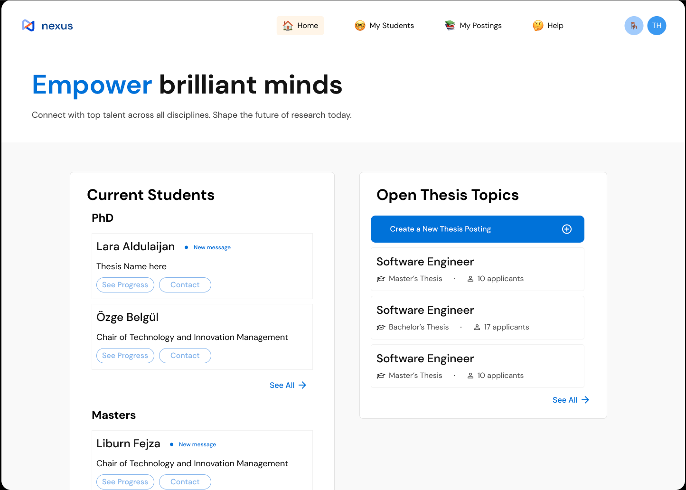

01
Get close to the actual problem
I use interviews, user feedback and process data to understand what is happening before deciding what needs to change.
MSc Management & Technology student at TUM, with experience across product development, analytics and operations. This portfolio presents the research, decisions and systems behind selected projects.
Whether the work begins with an operational issue, a product idea or a research question, I tend to focus on three things.
I use interviews, user feedback and process data to understand what is happening before deciding what needs to change.
I map systems, dependencies, data flows and ownership so that complex work becomes understandable and actionable.
I build and test prototypes, dashboards, workflows or models rather than stopping once the recommendation is written.
A working EdTech MVP for SMEs that turns a skill assessment into structured, personalised results. I led the SME problem framing, made product decisions on what to include or cut, and co-built the automation that connects the full user journey.

assets/skillovna-landing.png
assets/skillovna-demo.mp4
Small companies often have limited L&D capacity, while employees are left to find and evaluate training on their own. The team tested that problem before building and narrowed the product to one useful first step: identifying skill gaps and returning a structured starting point.
One continuous flow takes the user from an embedded assessment to a structured results dashboard.
A two-sided platform for students searching for a thesis and supervisors managing applications. As Product Manager in a five-person team, I defined product requirements, structured the business model and helped translate research into the Figma prototype.

assets/nexus-student-dashboard.png

assets/nexus-supervisor-dashboard.png
Students struggled to find suitable topics and track applications. Supervisors faced high demand, limited capacity and many applicants who did not meet the listed prerequisites. Treating only one side would have moved the bottleneck rather than removing it.
Nexus does not simply list topics. It coordinates matching, applications and progress across both sides of the thesis process.
A transparent firm-level AI maturity measure built from corporate disclosures, patents, executive appointments, board composition and acquisition activity. The research covered 1,539 large firms from 2015 to 2024.
Compare company scores, rankings, trends and feature contributions in the separate results application.
Each source used a different company identifier. Before constructing features, I had to build a consistent firm panel and resolve naming variation, subsidiaries and unmatched records. That reconciliation step determined whether the later model could be trusted.
The diagram keeps the full process visible, from incompatible raw sources to an interpretable firm score.
Built an XGBoost forecasting approach for manufacturing demand, validated it with walk-forward testing and extended it with a discrete-event simulation that translated forecasts into machine and staffing requirements.
Designed a guided chatbot that helps small businesses examine a specific process, identify realistic AI use cases and generate a preliminary business case. The product also addressed GDPR and trust directly instead of hiding them in the fine print.
I work at the intersection of learner operations, enterprise systems and data quality, supporting a global Academy environment across Salesforce, learning platforms and internal workflows. My role involves investigating recurring access and data issues, understanding where processes break across systems, and coordinating practical solutions with IT, vendors and internal teams. I also support the use of AI in learner service operations and translate feedback from customers, partners and employees into improvements to content, tools and processes.
I managed global programmes and digital tools supporting Talent Acquisition teams across regions. I worked directly with recruiters, hiring managers, directors and external vendors to understand operational needs, resolve issues and improve the tools and processes they relied on. The role also involved maintaining shared knowledge structures, coordinating communications, reporting and financial processes, and bringing structure to work with many stakeholders and moving parts.
I supported the administration and rollout of several global platforms, working with user access, data maintenance, vendor communication and programme coordination. This was my first experience operating digital tools at global scale and showed me how seemingly small issues in data, documentation or ownership can create friction across an entire process. I later carried that systems-focused way of working into my specialist roles at Celonis.
I progressed from an accounting internship into a broader role covering finance, payroll, tax, HR and compliance across several related companies. Working in a multi-entity environment taught me to understand how operational decisions affect financial records, employees and statutory obligations at the same time. It also developed the accuracy, discretion and sense of ownership that still shape how I approach complex systems and business processes today.